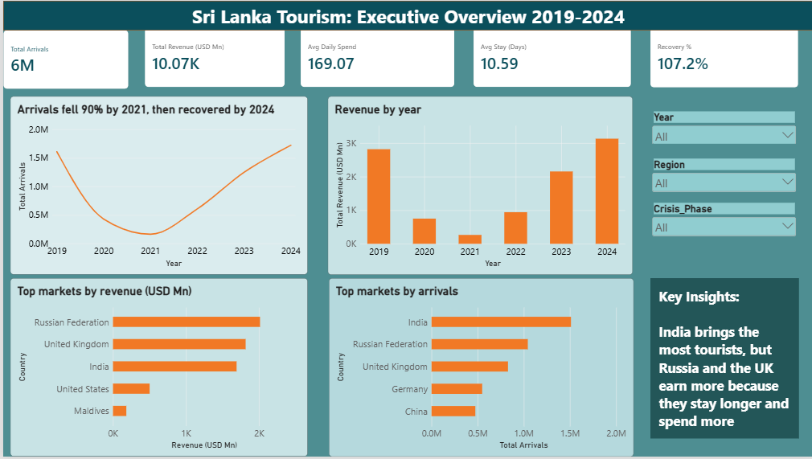

Programming
Python · SQL · JavaScript
I explore data, uncover patterns and build analytical solutions that turn information into meaningful insights.
01 / ABOUT
I'm a Data Science undergraduate with an interest in using data to understand problems, discover patterns and support better decisions.
I enjoy working across the data workflow — from preprocessing and exploratory analysis to visualization and predictive modelling. I am continuously developing my technical and problem-solving skills through academic and practical projects.
Exploring datasets, asking better questions, learning new tools and communicating findings clearly.
CURRENT FOCUSData Analytics · Data Science · Machine Learning02 / TOOLKIT
Python · SQL · JavaScript
Preparing, exploring and understanding datasets.
Communicating patterns through clear visuals.
Building and evaluating predictive models.
Working with data and development workflows.
Developing knowledge in analytics, statistical methods, graph theory and applied data science.
GROWTH MINDSET03 / SELECTED WORK
A selection of academic and practical projects where I apply analytical thinking and technical skills.
Developing an AI-powered fashion image classification system that explores computer vision and machine learning to recognize and categorize fashion items from images.
Developed a Random Forest classification model using a dataset of 9,722 records. Performed preprocessing, exploratory data analysis, feature preparation and model evaluation.
Explored monthly sales trends and developed an ARIMA time-series model to forecast future sales patterns.
Researching software dependency networks to explore how vulnerable packages may affect downstream packages and how network structure can help assess impact.
Worked on a customer churn classification project, including data preparation and comparison of Logistic Regression and Random Forest models.

Built a three-page Power BI dashboard analysing Sri Lankan tourism from 2019 to 2024, showing how arrivals and revenue fell during the Easter attacks, COVID-19 and the economic crisis, how they recovered, and which source markets bring the most value.
Developed an educational website concept about plant tissue culture, with learning resources and sections for community interaction and related tools.
Project repository buttons currently use placeholder GitHub links. Replace them with the correct repository URLs before publishing.
04 / MY RESUME
Currently seeking internship opportunities in Data Analytics, Data Science, and related fields. Explore my CV to learn more about my qualifications, technical skills, and project experience. Let's connect and explore how I can contribute to your team!
Data Science Undergraduate
Curriculum Vitae | PDF Document05 / BACKGROUND
Sabaragamuwa University of Sri Lanka
Currently pursuing · 2nd yearSTEMUP organization
Supporting children's learning06 / CONTACT
I'm interested in learning opportunities, internships and connecting with people working in data and technology.
Replace the sample contact links with your own details.